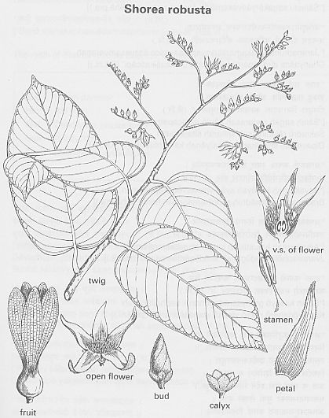

|
ECONOMICALLY
IMPORTANT PLANTS OF INDIA |
| Under-utilized Food and Fodder species and their wild relatives | Contributed by Ms.M.L Annapurna And Dr. Dhanapal, UAS, Bangalore |
Shorea robusta Gaertn. f.

HABIT & HABITAT:
It is a large, deciduous tree up
to 50 m tall; these are exceptional sizes, and under normal
conditions S. robusta trees attain a height of about 18-32 m and girths of 1.5-2
m.
Soil and Climate: Shorea robusta flourishes best in deep,
well-drained, moist, slightly acid sandy to clayey soils. It does not tolerate
waterlogging. The most favourable soil is a moist sandy loam with good subsoil
drainage. Availability of soil moisture is an important factor determining the
occurrence of S. robusta
.
BioticZone: Himalaya, Hindukush himalaya, SubHimalayan tracts and Tropical Himalayas.
Availability :
It can be found in the dense tropical primary
forests, Dry deciduous forest, Hill forests, Hill slopes.
Soil: It grows well on gravelly soil.
Misc: Borai, Bordabri, Burdwan, Chilapata, Corbett National Park, Garo, Himachal
Pradesh to Bhutan, Jaintia hills, Jaldapara, Khasi hills, Korba, Kumaon, Mahadeo
hills, Rengakhar, Sitanadi, South Eastern parts, Sub tropical to Sub - temperate
and Sutlej.
Country: Bhutan, India, Nepal and Pakistan.
Zone: Central, East, North, North East, South and West zone. ,
State: Andhra Pradesh, Arunachal Pradesh, Assam, Bihar, Haryana, Himachal Pradesh,
Madhya Pradesh, Meghalaya, Orissa, Punjab, Sikkim, Tripura, Uttar Pradesh and
West Bengal.
District: Balaghat, Bastar, Bilaspur, Champaran, Darjeeling, Hoogli,
Hoshangabad, Jalpaiguri, Kameng, Mandla, Midnapur, Purulia, Raigarh, Raipur,
Rajnandgaon,
Rewa and Surguja.
Taluk: Pachmarhi.
Status :
DIAGNOSTIC FEATURES
Shorea robusta bole is clean, straight and cylindrical, but often bearing epicormic
branches; crown is spreading and spherical. Bark dark brown and thick, with longitudinal
fissures deep in poles, becoming shallow in mature trees; provides effective protection
against fire. The tree develops a long taproot at a very young age. Flowers yellowish-white, arranged in large terminal or axillary racemose panicles.
Fruit at full size about 1.3-1.5 cm long and 1 cm
in diameter; it is surrounded by segments of the calyx enlarged into 5 rather
unequal wings about 5-7.5 cm.
Breeding System :
Phenology :
The flowering occurs during March to April and in some
places it will be during February to April.
Pollinators:
Seed Biology :
Seed Germination:
Shorea robusta regenerates naturally through seed and coppice. Direct sowing
is the cheapest and best method of artificial propagation, although stump plantings,
planting out entire plants with balls of earth, and planting out container-grown
seedlings are also employed. Air-layering is also physiologically possible.
Artificial regeneration of S. robusta is practiced to a major extent primarily
within its native habitat. The seed germinates soon after falling off the tree
if moisture conditions are favourable. The germination percentage of fresh seeds
is 90-100%, but their viability falls to zero after just a few weeks. Germination
is hypogenous. Generally, a seed produces a single seedling, but cases of polyembryony
have also been reported. The primary root of the seedling is long, thick, terete,
tapering and woody, and the stem is erect, wiry, very finely pubescent or glabrescent.
Most commonly the seeds are planted 10-20 cm apart in rows with a spacing of
3-7 m.
Cultivation:
Young plants grow quickly, attaining top heights of up to
6 m after 6 years. The 1st thinning is usually performed after 5 years, and
thereafter the trees are thinned every 5-10 years. Rotations of 30-40 years
are used when coppice regeneration is practiced, and 80-160 years for high forest
regeneration. A species that requires a lot of light, S. robusta coppices well.
Both coppice regeneration and planting of seedlings are used in plantation systems.
It is also ideally used for growing under taungya systems.
Intercropping: In Assam, India, artificial
regeneration of S. robusta is practiced in combination with crops such as upland
rice, maize, sesame and mustard. Good results have also been achieved with mixed
plantations in which S. robusta is cultivated together with Tectona
grandis.
MAJOR PESTS & DISEASES
Pests:
Diseases:
Economic
Potential and Uses
Harvesting
Practices
Produce and Products